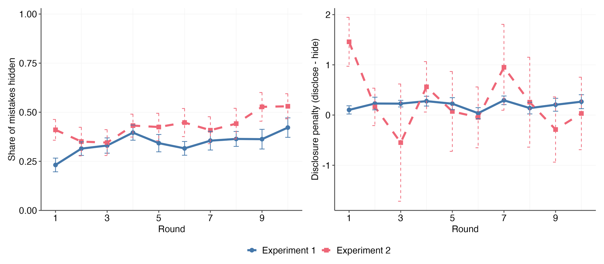

Mistakes stay hidden, and the stakes do not matter. Workers conceal roughly a third of their mistakes even though disclosure raises everyone’s pay, and raising the cost of a mistake changes neither hiding nor punishment. What sustains the silence is the structure of punishment: the one worker who owns up bears almost the entire team sanction, while a teammate who stays quiet next to them gets off nearly free.
The settingA team, a risky project, and a private mistake.
Teams of one manager and two workers play repeated rounds. Each worker does a short attention task (Stroop and simple maths) and privately learns whether they slipped up. A single mistake by either worker makes the ambitious project fail for the whole team, but only the worker knows – unless they disclose it.
1
Work
Each worker completes the task and privately learns whether they made a mistake.
2
Disclose or hide
A worker who made a mistake chooses whether to tell the manager.
3
Project choice
The manager picks the ambitious project or the safe backup.
4
Punish
Payoffs are revealed and the manager may deduct money from either worker.
Parameters (€ per team member)
Experiment 1
Experiment 2
Ambitious project, success (LOW / HIGH stakes)
10 / 20
8 / 40
Ambitious project, failure
2
0
Backup project (always)
4
2
Chance failure even without mistakes
20%
20%
Maximum total team punishment
2.00
12.00
Participants (matching groups)
264 (24)
144 (12)
Both experiments vary the success payoff within participants (one block LOW, one block HIGH, order balanced). Experiment 1 additionally varies between participants whether teams stay together (PARTNERS) or are re-formed every round (STRANGERS); Experiment 2 uses strangers only, with a six-times-larger punishment cap and a much wider stakes spread.
Vignette studyWhen it is hypothetical, blame does scale with the stakes.
244 Prolific participants judged a mechanic whose maintenance mistake could be disclosed (allowing corrective action) or hidden (a breakdown). Daily profits at stake were $600 (LOW) or $10,000 (HIGH). Participants awarded a bonus between $0 and $2,000, anchored on $1,000 as the firm’s average – anything below $1,000 reads as a punishment.
Mean bonus awarded ($)
LOW ($600 at stake)
HIGH ($10,000 at stake)
No breakdown (no mistake)
1,185
1,233
Mistake disclosed, corrected
874
674
Breakdown, nothing disclosed
408
377
Values as reported in the paper (the vignette raw data are not part of this repository, so these are quoted, not recomputed). Blame for a disclosed mistake rises from 4.6 to 5.2 on a 9-point scale (rank-sum test, p = .028); the bonus cut for disclosing grows by $248 when stakes are high (difference-in-differences, p < .001).
So in a hypothetical, one-shot judgement the paper’s core hypothesis holds: larger potential losses mean more blame and harsher punishment for the same mistake. Note, though, that here disclosure is still rewarded relative to hiding – the lowest bonus follows a breakdown with no disclosure. The lab, with real money and real teammates, tells a different story.
Experiment 1With real incentives, the stakes move nothing.
The pre-registered tests. Workers hide about a third of their mistakes whether the successful project pays €10 or €20, and the extra punishment for disclosing (rather than hiding) a mistake does not rise with the stakes – if anything it falls. Keeping teams together does not help either. All estimates are matching-group means computed from the cleaned data.
Low stakesHigh stakeswhiskers = ±1 SE
Strangers (new team each round)Partners (same team all block)whiskers = ±1 SE
Both experimentsThe honesty penalty: the discloser pays, the silent teammate walks.
Punishment received by a worker in rounds where the team made a mistake, split by who disclosed. Disclosure helps the team – total punishment is lower and the manager can switch to the backup project – but the worker who discloses alone absorbs almost all of it, while a teammate who stays silent next to a discloser is punished least of all. The structure invites free-riding on a colleague’s honesty.
€0.14 / €0.12
The expected extra punishment for disclosing a mistake instead of hiding it (Experiments 1 and 2). Small – but reliably positive.
6× / 5×
A sole discloser is punished about six times (Exp. 1: €0.54 vs €0.09) and five times (Exp. 2: €1.99 vs €0.41) more than the silent teammate beside them.
−44%
Hiding is collectively costly: in Experiment 1, teams that concealed a mistake earned €2.17 each versus €3.88 when someone disclosed.
Worker stayed silentWorker disclosedwhiskers = ±1 SE
Experiment 2Six times the stick, five times the spread – still nothing.
To rule out ceiling effects, Experiment 2 raises the punishment cap from €2 to €12 and widens the stakes spread from €10–20 to €8–40. Hiding rises overall (to 43% of mistakes), but the treatment effects stay null: neither hiding nor the disclosure penalty responds to the stakes. Managers barely use the larger cap – only 7% of disclosed-mistake rounds saw maximal punishment.
Low stakesHigh stakeswhiskers = ±1 SE
ExploratoryThe problem gets worse, not better.
Hiding, conditional on having made a mistake, drifts upwards over the rounds in both experiments – from roughly 30% at the start to around 45% by the last round – while the disclosure penalty stays flat. Experience does not teach teams to own up; it teaches them to keep quiet. Consistent with disclosure being a strategic complement, workers who believe others hide more are themselves more likely to hide.

Figure from the paper (means by round, conditional on a mistake; unit of observation is individual mistakes, pooled over blocks; error bars ±1 SE).
The model in one line. A manager punishes out of blame, which scales with the payoff lost to a mistake, and rewards honesty, which recovers part of that loss. Workers weigh the team benefit of disclosing against the extra punishment it attracts – so the equilibrium disclosure rate falls as the stakes rise. That is the prediction the experiments were built to test (and did not find).
The gameTwo workers, a manager, and a noisy failure signal.
A risk-neutral manager and two risk-neutral workers. Each worker independently makes a mistake with probability m and privately learns it; a worker who made a mistake sends a report ri ∈ {0,1} (only genuine mistakes can be disclosed). The manager then picks a project and, after payoffs realise, may punish each worker.
Team performance
Project A (ambitious)
Project B (backup)
No mistakes
πS with prob. q, πF with prob. 1−q
πB
Mistake by one or both workers
πF
πB
Payoffs are per team member, with qπS + (1−q)πF > πB > πF: without mistakes the ambitious project is worth the risk, but after a mistake the backup is strictly better. Because A can also fail by pure chance (probability 1−q), a failure is a noisy signal – it gives a silent worker cover.
Disclosure is valuable because it lets the manager switch to the backup and recover πB−πF for every team member. The question the model answers: when do workers nevertheless keep quiet?
PunishmentBlame minus honesty.
Punishment is not a chosen incentive scheme but an emotional response, in the spirit of anger-from-blaming behaviour (Battigalli, Dufwenberg & Smith 2019). Worker i’s punishment given the report pair (ri, rj) is:
pi(ri,rj) =
wbbi(ri,rj) (πS−πF)
−
whhi(ri,rj) Δπ
blame part honesty part
Reporting always raises your own blame: bi(1,rj) > bi(0,rj) for any rj – a disclosure is conclusive evidence, silence only a suspicion.
Your teammate’s disclosure protects you: pi(0,1) ≤ pi(0,0). If the failure is already explained by their mistake, your silence looks innocent – disclosure has a positive externality on the silent teammate.
Team punishment does not depend on who owns up: pi(0,1) + pj(1,0) = 2 pi(1,1) – blame and honesty shares each sum to one, so only the split changes.
Honesty can hurt the individual while helping the team: when wh is moderate relative to wb, we get pi(1,1) < pi(0,0) < pi(1,0) – exactly the pattern in the data.
The expected rise in punishment from disclosing rather than hiding, given the co-worker discloses with probability r, is the honesty penalty:
EquilibriumWhen is disclosure influential – and how much survives?
The manager selects the backup the moment anyone discloses. After silence, she trusts the ambitious project only if she believes workers disclose often enough – the report’s absence must be good news:
choose A after silence ⇔ r ≥ r̂ = (1/m) [ 1 − (1−m) √q (πS−πF) / (πB−πF) ]
A worker with a mistake weighs the honesty penalty against being pivotal. If the co-worker discloses (probability mr), her own report changes only her punishment; otherwise it also flips the project to the backup, worth πB−πF to her. Disclosing is worth it when:
ΔUi(r) = (1−mr) (πB−πF) − HP(r) > 0
Equilibrium characterisation
ΔUi(r) is strictly decreasing in r, so the symmetric equilibrium disclosure rate r* is unique whenever it is positive: workers mix at the rate that makes their colleagues indifferent. A never-disclose equilibrium (with the manager defaulting to the backup) can coexist whenever r̂ ≥ 0.
Proposition 1 – the stakes prediction
In any equilibrium with influential communication, the disclosure rate r* is (weakly) decreasing in the success payoff πS. Bigger stakes mean bigger blame, a bigger honesty penalty, and less disclosure – precisely when disclosure is most valuable.
Hypothesis 1
Workers are punished more for reporting a mistake when the stakes are higher.
Vignette: supportedLab: no effect
Hypothesis 2
Conditional on a mistake, workers disclose less when the stakes are higher.
Lab: no effect
Hypothesis 3
Managers punish mistakes less in ongoing relationships (PARTNERS) than one-shot ones.
Lab: no effect
Hypothesis 4
Workers disclose more often in ongoing relationships than one-shot ones.
Lab: no effect
Explore the equilibrium
The exact model above, solved live: the four punishments follow in closed form from Bayesian updating given r, and the equilibrium r* solves ΔUi(r) = 0 (bisection on a strictly decreasing function). Presets load each experiment’s payoff calibration; the emotion weights wb, wh are free parameters – the defaults are chosen so the model’s four punishments roughly match the bars observed in Experiment 1 (they are an illustration, not an estimate). Everything updates as you drag.
Try raising wb: once blame is strong enough, r* drops below 1 and the stakes gradient of Proposition 1 appears.
Model punishments at equilibrium
p(ri, rj) at r*
Proposition 1: r* falls as the stakes rise
disclosure rate r* against πS
Curve traced over πS with all other sliders fixed; dot = current πS.
Model × dataWhat the model gets right – and what it cannot explain.
The punishment structure is right. With weights matching the observed Experiment 1 bars (wb ≈ 0.09, wh ≈ 0.04), the model reproduces the honesty-penalty ordering seen in the data: p(0,1) < p(0,0) < p(1,1) < p(1,0) – individually costly, collectively rewarded honesty.
But those punishments are far too small to explain the hiding. At the observed magnitudes the pivotal benefit of disclosure (πB−πF = €2) dwarfs the ≈€0.14 penalty, and the model predicts (nearly) full disclosure – try the Exp 1 presets above. Yet workers hide 34–43% of mistakes. Free-riding would require believing mr ≥ 0.93, far beyond reported beliefs; the residual concealment points to non-monetary image concerns.
And the stakes channel never fires. The model’s comparative static needs punishment to scale with πS−πF (as it did in the hypothetical vignette). Real managers did not scale it – consistent with punishing genuine, unintentional mistakes by intention rather than by outcome.